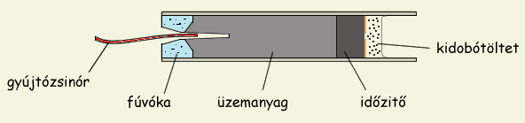
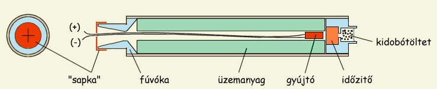
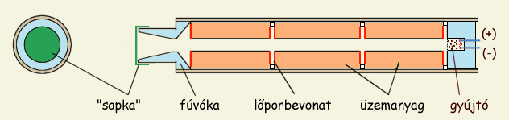
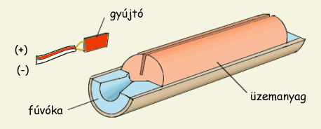
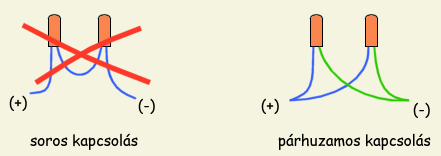

A hátulégõs motrok begyújtása viszonylag egyszerû feladat. Mivel ezen motroknak meglehetõsen kicsi az égési felülete és légkör nyomáson is gyorsan égõ üzemanyagokat használnak, az égés pillanatok alatt kiterjed a teljes égési felületre. Ezen motrok indítására közönséges gyújtózsinór vagy egyszerû elektromos gyújtás is tökéletesen megfelel; ez utóbbi elengedhetetlen ha több motrot kell párhuzamosan indítanunk. A furatba szórt nagyon kevés lõpor segítheti a begyújtást.
|  | 1. Ábra: Hátulégõs motor begyújtása gyújtózsinórral |
Valamivel több gondot okozhat azon motrok begyújtása, amelyek közepében az üzemanyagblokkban egy csatorna (furat) van kialakítva és ebben történik az égés. Ilyenkor ugyanis a csatorna fúvókától legtávolabb esõ részén kell begyújtani a motrot. Ez azért szükséges, hogy a furatban a fúvóka irányába áramló forró gázak mihamarabb begyújtsák a furat teljes belsõ felületét. Egy "helytelenül" begyújtott motor is mûködhet, csakhogy egészen más tolóerõgörbéje lesz mint terveztük (kisebb és egyenlõtlenebb tolóerõt eredményez, több idõ szükséges a nyomás felépüléséhez stb...). A minél hatékonyabb begyújtást szolgálja a fúvóka végére húzott mûanyag "sapka" is, amely az elsõ pillanatokban (míg le nem repül) a nyomás felépülését segíti. A "sapka" kereszt alakú bevágása ugyanakkor megcsípi a vezetékeket és helyén tartja a gyújtót.
|  | 2. Ábra: Égõcsatornás motor gyújtáselrendezése. Az égés a csatorna legbelsõ pontján indul el. |
Nagyobb motrokba akár be is építhetjük a gyújtószerkezetet (3. Ábra). A megoldás nagyon elegáns, de hátránya is van: esetleges gyújtóhiba esetén szét kell szedni a motrot a gyújtó cseréjéhez. A beépített gyújtó megnehezíti az idõzítõtöltet használatát is. Más kérdés, hogy nagy motrok használata esetén már elektromos idõzítést is alkalmazhatunk az ejtõernyõ kidobótöltetének begyújtására (ami nagyon ajánlott). Ha beépített gyújtó mellett döntünk, mindenképpen ajánlatos a motor összeszerelése után után kimérni az ellenállást, hogy ne a kilövõállványon derüljön ki az esetleges kontakthiba.
Nehezen gyúló (pl. epoxy alapú) üzemanyagok és/vagy komplex üzemanyagblokk-geometriák (pl. BATES elrendezés) használata esetén megkönnyíti a begyújtást ha az égési felület egy részét gyúlékony bevonattal látjuk el. Erre a célra legjobb lõpor/celluloid pépet használni. A következõ ábrán egy szakaszos elrendezésû motor látható, beépített gyújtóval. Ilyen elrendezésnél fontos hogy a teljes égési felület lehetõleg egyszerre gyúljon be, hogy lapos tolóerõgörbét kapjunk. Az üzemanyagtömbök végeit ezért vékony lõporbevonattal látjuk el (az ábrán pirossal jelölve).
|  | 3. Ábra: Rakétamotor BATES elrendezéssel és beépített gyújtóval |
Különleges lapos gyújtót igényelnek a hold-típusú égésfelületû motorok. Ezek henger alakú üzemanyagblokkot használnak, amelyben egy bevágás van (nevük onnan ered, hogy elfogyó holdsarlóra hasonlító égésprofiljuk van). A gyújtó elég lapos kell legyen ahhoz, hogy beférjen ebbe a bevágásba. Legkézenfekvõbb egy lõporbevonatú NiCr gyújtót használni, amelyet még formázható állapotában ellapítottunk. A lenti ábrán egy ilyen félbevágott motor látható, ép üzemanyagtömbbel és hozzávaló gyújtóval.
|  | 4. Ábra: Lapos gyújtót igényelõ rakétamotor metszete |
Több motor egyidejû begyújtására párhuzamosan kapcsolt elektromos gyújtókat használunk (5. Ábra). Gyújtózsinórt ez esetben nem lehet használni, mert szinte lehetetlen úgy idõzíteni, hogy a motrok egyszerre gyúljanak be. Kétmotoros rakétáknál például ennek az a következménye, hogy az egyik motor begyúl, a rakéta elindul, de a tolóerõ egyenlõtlen eloszlása miatt nagy ívben oldalra fog kanyarodni (a nem mûködõ motor fele). Nagymértékben csökkenti ezt a jelenséget ha a rakétánk annyira fel tud gyorsulni a kilövõállványon, hogy a szárnyakon megfelelõ mértékû stabilizáló felhajtóerõ keletkezzen. Az eltérülés mértékét a tolóerõ és a fellépõ forgatónyomaték nagysága, illetve a kilövõállvány elhagyásakor elért sebesség közti arány határozza meg. Nem ritka (de meglepõ), hogy "asszimetrikus tolóerõ" esetén is egyenesen repül a rakéta.
|  |
| 5. Ábra: Két motor egyidejû begyújtása |
Elektromos gyújtók használata esetén egy dologra kell ügyelni: sorba kötött gyújtókat nem lehet használni, mert valószínû, hogy az egyik ellenállás hamarabb kiizik a többinél, elszakad és megakadályozza, hogy a hátramaradt ellenállások is kiizzanak. Az eredmény ugyanaz, mint a gyújtózsinór esetében: csak egy motor fog begyúlni. A helyes kapcsolási rajz a jobboldali ábrán látható. A párhuzamos kapcsolás velejárója, hogy az összellenállás fordítottan arányos az összekapcsolt ellenállások számával, tehát a gyújtókombinációnk összellenállása kisebb lesz mintha csak egyetlen gyújtót használnánk. Ebbõl az következik, hogy a kiizzításhoz nagyobb feszültségre lesz szükség. Érdemes elõzetes teszttel megállapítani, hogy milyen nagyságú feszültség/áramerõsség elegendõ a biztonságos gyújtáshoz, ha nem akarunk meglepetést a kilövõállványon. Érdemes arra is figyelni, hogy az indítógombot a gyújtóhoz kapcsoló vezetéken is jelentõs mértékû lehet a feszültségesés (én pl. 20 m kábelt használok), tehát a gyújtástesztet ezzel a vezetékkel kell elvégezni.
Gondot jelenthet a kompozit üzemanyagú motrok párhuzamos begyújtása. A kompozit üzemanyagok köztudottan nehezen gyúlnak be, nagyobb gyújtási hõmérsékletet igényelnek mint más rakétaüzemanyagok és valamivel tovább tart amíg felépül a motorban az üzemi nyomás. Ezért nagyobb a valószínûsége annak, hogy még ha mindegyik motor be is gyúl, a maximális tolóerõ nem egyszerre jelentkezik. Megesik, hogy az egyik motor csak akkor kezd hasznos tolóerõt szolgáltatni, amikor a másik/többi motor már majdnem kiégett. Kompozitos motrok indításásra ezért speciális, magas hõmérsékletû gyújtót használunk ami biztonságosabbá teszi a gyújtást. Ezt a következõképpen készítjük: egy "sima" lõporbevonatú NiCr gyújtót egy-két extra réteg, magas hõmérsékleten égõ pirogén keverékkel vonjuk be. Ez a keverék annyiban különbözik a hagyományos gyújtókeveréktõl, hogy 5 - 10 % alumíniumport is tartalmaz. Az alumínium égése biztosítja a kellõen magas hõmérséklet elérését. Egy ilyen keverék lehetséges összetétele pl: 70 % KNO3, 15 % C, 8 % Al, 7 % celluloid. Ezt a pirogén rétrget a gyújtók készítésénél leírt módon vigyük fel az elsõ rétegre. Az elsõ (lõpor/celluloid) réteg jelenléte azért fontos, mert az alumíniumtartalmú pirogén keverékek nehezebben gyulladnak meg, szükséges tehát a könnyen gyulladó elsõ réteg égéshõje.